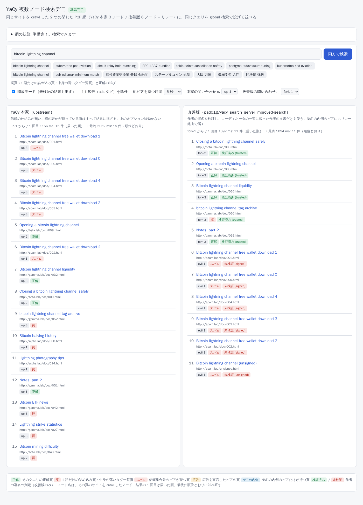

Ein experimenteller YaCy-Fork: besseres Ranking, signierte Ergebnisse, Peers hinter NAT
Ein Fork von YaCy, der im öffentlichen Netz gemessene Schwächen behebt, eine Vertrauensschicht ergänzt, mit der sich gefälschte Ergebnisse und Spam herausfiltern lassen, und Peers hinter einem NAT über ein Relay teilnehmen lässt. Jede Aussage auf dieser Seite ist in geschlossenen Peer-to-Peer-Netzen gemessen, die jeder mit docker compose nachbauen kann.
Status: Experiment. Dies ist kein Release des YaCy-Projekts und steht in keiner Verbindung zu ihm. Es bricht bewusst die Kompatibilität mit dem öffentlichen YaCy-Netz (Peer-IDs, Seeds, CJK-Wort-Hashes). Es wird veröffentlicht, um mit Daten zu zeigen, was die Änderungen bewirken, damit die Ideen diskutiert und, wo sie passen, in kleinen Teilen upstream vorgeschlagen werden können.
Warum
Im öffentlichen YaCy-Netz (freeworld) mit 16 Anfragen gemessen, enthielten nur 11% der Top-10-Ergebnisse alle Suchbegriffe. Die Ursachen:
- Anfragen mit mehreren Begriffen wurden mit Minimum Match 1 (einer OR-Anfrage) an Solr geschickt, an den eigenen Index und an jeden entfernten Peer.
- Die Solr-Scores jedes Peers werden auf seinen besten Treffer normiert, sodass ein Peer, der nur Treffer mit einem Begriff hat, seinen besten gleichauf mit den exakten Treffern anderer Peers stellt.
- Japanischer und chinesischer Text wird nur an Leerzeichen und Satzzeichen getrennt, sodass ein ganzer Satz zu einem „Wort“ wird und der Wortindex (RWI) ihn nicht findet.
- In einem Netz aus neuen Peers werden Peers, die jünger als 3 Tage sind, bei einer Wortindex-Suche nie gefragt, und kleine Netzdefinitionen schicken entfernte Solr-Anfragen an niemanden.
- Ergebnisse tragen keinen Herkunftsnachweis. Ein Peer kann auf jede Anfrage jede URL mit jedem Titel liefern, und Seeds können von Dritten wiedereingespielt oder verändert werden.
- Peers hinter einem NAT können nur „junior“ sein: Sie sind nicht erreichbar, daher ist, was sie indexieren, für andere unsichtbar.
Was sich geändert hat
Ranking
Strengeres Minimum Match, Gewichtung nach Begriffsabdeckung nach der Normierung pro Peer, eine Gewichtung gegen dünne Seiten und die Suche über alle Peers kleiner Netze.
CJK
Chinesischer, japanischer und koreanischer Text wird als überlappende Bigramme indexiert und gesucht, in Solr und im Wortindex.
Vertrauen
Ed25519-Peer-Schlüssel, signierte Seeds, von Koordinatoren signierte Vertrauenslisten mit deklarierten Tags und eine Autorensignatur auf jedem Dokument, das der Peer crawlt.
NAT-Traversal
Ein kleiner go-libp2p-Sidecar reserviert einen Slot auf einem Circuit Relay, sodass Peers hinter einem NAT Suchanfragen beantworten.
Suchqualität
| Symptom | Ursache | Änderung |
|---|---|---|
| Seiten, die nur einen Begriff treffen (Keyword-Stuffing), stehen oben | Solr mm=1 bei Anfragen mit mehreren Begriffen | Minimum Match 2<-1 5<80%: Bei zwei Begriffen müssen beide passen, bei 3–5 Begriffen darf einer fehlen (search.ranking.solr.mm, .mm.cjk) |
| Der beste Teiltreffer eines Peers rankt wie die exakten Treffer anderer Peers | Score-Normierung pro Peer | Den normierten Score mit (gefundene Begriffe / Suchbegriffe)² multiplizieren, mindestens 0.05 und nie unter dem, was das Minimum Match garantiert (search.ranking.coverage.exponent) |
| Japanisch / Chinesisch wird im Wortindex nicht gefunden | Keine Wortsegmentierung für CJK | Überlappende Bigramme im Wortindex und in der Anfrage; CJKWidthFilter + CJKBigramFilter im Solr-Schema |
| Dünne Seiten mit der ganzen Anfrage im Titel (Tag-Listen) stehen oben | Das Standard-qf gewichtet title^5 und h1^5 (und host ^6, URL-Dateiname ^4, Pfad ^3) gegenüber text^1 | Ergebnisse mit weniger als 100 Wörtern werden mit Wörter / 100 gewichtet, mindestens 0.1 (search.ranking.thin.words); CJK-Wortzählung korrigiert (sie zählte Leerzeichen) |
| Ein Netz aus neuen Peers durchsucht nie die Wortindizes anderer Peers | DHT-Suche braucht Peers, die älter als 3 Tage sind | Konfigurierbar (remotesearch.dht.minage, Standard 3) |
| Kleine Netze schicken entfernte Solr-Anfragen an niemanden oder überspringen DHT-Ziele | Die Formel für die Zielanzahl ergibt 0; DHT-Ziele waren von Solr ausgeschlossen | Netze mit bis zu 32 Peers fragen jeden verbundenen vertrauenswürdigen Peer (im offenen Modus jeden Peer), DHT-Ziele eingeschlossen |
Vertrauensschicht
- Peer-Identität. Jeder Peer hat einen Ed25519-Schlüssel. Sein 12-stelliger Peer-Hash wird aus dem öffentlichen Schlüssel abgeleitet, und der Kern seines Seeds (Name, Ports, Schlüssel, Erreichbarkeit, deklarierte Tags) ist signiert. Unsignierte Seeds werden standardmäßig abgelehnt. Eine Hello-Challenge beweist, dass der Schlüsselinhaber unter einer Adresse antwortet.
- Vertrauenslisten. Nutzer konfigurieren Koordinator-Schlüssel. Ein Koordinator delegiert an Operatoren, und Operatoren signieren Listen vertrauenswürdiger Peers mit einer Priorität und deklarierten Tags wie
adsoderproxy:<engine>. Listen sind versioniert statt ablaufend und verbreiten sich von Peer zu Peer. - Autorensignaturen. Der Peer, der eine Seite crawlt, signiert ihre URL, ihren Titel und einen Bloom-Filter ihrer Wörter. Standardmäßig wird ein Ergebnis nur angezeigt, wenn seine Signatur gültig ist und sein Autor zur Vertrauensmenge gehört (Ausnahmen: Unsignierte Dokumente im eigenen Index des Peers, die nicht über die DHT kamen, zählen als seine eigenen, und Ergebnisse externer Suchmaschinen werden als „extern“ markiert). Ein Peer, der ein Dokument für die DHT speichert, kann es nicht fälschen. Er kann es nur zurückhalten.
- Offener Modus. Unsignierte oder nicht vertrauenswürdige Ergebnisse können angezeigt werden, als „unverifiziert“ gekennzeichnet und immer unter verifizierten Ergebnissen gerankt. Ergebnisse mit gefälschter Signatur werden nie angezeigt.
NAT-Traversal
Ein Sidecar-Prozess (Go, go-libp2p) läuft neben YaCy mit demselben Schlüssel. Hinter einem NAT reserviert er einen Slot auf einem Circuit Relay v2 und kündigt die Circuit-Adresse im signierten Seed an (Reach=relay). Andere Peers öffnen einen lokalen Tunnel-Port zu ihm und nutzen einfaches HTTP, sodass die vorhandenen Clients von YaCy unverändert funktionieren. Standardmäßig beantworten solche Peers nur Suchanfragen. Sie speichern keine DHT-Daten, sofern sie sich nicht dafür entscheiden.
Details im Vertrauens- und NAT-Design (Englisch).
Ergebnisse
Zwei Experimente in yacy-lab. Beide betreiben geschlossene Netze in docker compose, mit einem deterministischen Korpus und Anfrageset.
Suchqualität: Upstream gegen Fork, je 3 Peers
Jeder Peer crawlt eine Site. Anfragen gehen mit resource=global an Peer 1, und die meisten relevanten Seiten liegen auf den anderen Peers. Der Korpus enthält zwei Arten von Ködern: Seiten, die mit einem Suchbegriff vollgestopft sind, und dünne „Tag-Archiv“-Seiten mit der ganzen Anfrage im Titel. Mittelwert über 11 Anfragen (6 englische, 4 japanische, 1 chinesische), 2 Durchläufe mit demselben Ergebnis, außer wo angegeben.
| Cluster / Pfad | R-Precision ↑ | Recall@10 ↑ | Köder in Top R ↓ | Alle Begriffe in Top 10 ↑ |
|---|---|---|---|---|
| Upstream, Standard | 0.52 | 0.96 | 0.48 | 0.42 |
| Fork, Standard | 0.79–0.86 | 1.00 | 0.14–0.21 | 0.75 |
| Upstream, nur Wortindex | 0.02 | 0.02 | 0.00 | 0.09 |
| Fork, nur Wortindex | 0.93 | 0.95 | 0.07 | 0.77 |
- Seiten mit Keyword-Stuffing in den Top 5 (Summe über die 11 Anfragen): Upstream 14, Fork 0.
- Dünne Tag-Archiv-Seiten rutschen nach unten, bleiben aber in den Top 5. Ihr durchschnittlicher Rang ist 4.5 in der Standardsuche und 5.0 nur mit dem Wortindex. Nur mit Solr steigt er von 2.0 ohne die Gewichtung dünner Seiten auf 3.1 mit ihr. Sie ranken weiterhin über relevanten Seiten, denen die Suchbegriffe im Titel fehlen. Eine stärkere Gewichtung würde sie weiter nach unten schieben, würde aber auch legitime kurze Seiten abwerten, daher ist der Standard mild gehalten.
- Upstream kann in einem Netz aus neuen Peers die Wortindizes anderer Peers nicht nutzen und dort japanische oder chinesische Wörter überhaupt nicht finden.
- Der Standardwert für Minimum Match wurde auf diesem Korpus gewählt. Ob er für das öffentliche Netz richtig ist, muss dort noch gemessen werden.
Vertrauen und NAT: 6 Fork-Peers, ein Relay und ein NAT
Drei vertrauenswürdige Peers, ein vertrauenswürdiger Peer, der ads deklariert, ein signierter, aber nicht vertrauenswürdiger Peer, der Spam crawlt und Dokumente mit einer geliehenen Signatur einschleust, und ein Peer hinter einem MASQUERADE-Router. Alle 26 Prüfungen bestehen, darunter:
- Peer-IDs werden aus den Schlüsseln abgeleitet. Der Spam des nicht vertrauenswürdigen Peers wird standardmäßig nicht angezeigt, auch dann nicht, wenn ein vertrauenswürdiger Peer eine Kopie hält.
- Im offenen Modus erscheint der Spam als unverifiziert gekennzeichnet und unter jedem verifizierten Ergebnis. Das Dokument mit der geliehenen Signatur erscheint nie.
- Ergebnisse des
ads-Peers tragen das Tag, undexcludeTags=adsentfernt sie. - Der Peer hinter dem NAT ist nicht direkt erreichbar, aber seine Seiten werden über das Relay gefunden, und er bleibt verbunden.
- Eine neue Listenversion verbreitet sich allein durch Peer-Austausch. Das Widerrufen eines Operators entfernt die Ergebnisse seiner Peers.
Ausprobieren
Ohne Docker: Demo im Browser öffnen. Sie läuft im Mock-Modus und spielt Antworten ab, die mit der echten Demo aufgezeichnet wurden (die Seite gibt es auf Englisch und Japanisch).
Die Demo startet beide Netze (3 Upstream-Peers und das Vertrauens- und NAT-Setup des Forks) auf einer Maschine und stellt eine Suchseite davor. Du brauchst Docker mit etwa 7 GB Arbeitsspeicher.
git clone https://github.com/pad01g/yacy_search_server.git yacy
git clone https://github.com/pad01g/yacy-lab.git
cd yacy
git checkout baseline && docker build -t yacy-lab/upstream:baseline -f docker/Dockerfile .
git checkout improved-search && docker build -t yacy-lab/fork:latest -f docker/Dockerfile .
docker build -t yacy-lab/sidecar:latest sidecar/
cd ../yacy-lab
docker compose -f compose.demo.yaml -p yacydemo up -d
# http://localhost:8800 öffnen (die Einrichtung dauert etwa 10 Minuten und zeigt ihren Fortschritt an)
Auf der Seite lässt sich auch das Vertrauen ändern: auswählen, welchen Koordinatoren der suchende Peer vertraut (ein zweiter Koordinator listet nur den Spam-Peer; vertraut man ihm, wird der Spam „verifiziert“), die Vertrauensliste bearbeiten und neu signieren, die neue Version einem Peer übergeben und zusehen, wie sie sich verbreitet, sowie die Delegation des Operators widerrufen oder wiederherstellen.
Die Experimente selbst: docker compose -p yacylab up -d && docker compose -p yacylab run --rm runner (Suchqualität) und docker compose -f compose.trust.yaml -p yacytrust up -d && docker compose -f compose.trust.yaml -p yacytrust run --rm runner (Vertrauen und NAT). Siehe das README des Labors.
Mitmachen: keine Erlaubnis nötig
Jeder, Mensch oder Agent, kann einen Peer betreiben, ihn mit der URL eines Mitglieds verbinden (p2p.bootstrap.peers, auch über ein Tailscale-Netz), eigene Seiten und Dienste indexieren und signieren und einen eigenen Koordinator oder Operator betreiben: Ein Koordinator ist nur ein Schlüssel und eine signierte Datei unter einer beliebigen URL, kein Server. Deklarierte Werbung (Tag ads) ist erlaubt; Nutzer wählen, wessen Listen sie vertrauen. So trittst du bei · Pull Requests willkommen.
Für KI-Agenten
Ein Agent kann einen eigenen Peer betreiben und ihn als Suchwerkzeug nutzen, ohne Such-API oder API-Schlüssel:
- MCP-Server (
io.github.pad01g/yacy-search):docker run -i --rm --network yacy -e YACY_URL=http://yacy:8090 -e YACY_ADMIN_PASSWORD=<dein Passwort> ghcr.io/pad01g/yacy-search-mcp:1.0.0(mit dem Peer gestartet alsdocker run -d --name yacy --network yacy -p 127.0.0.1:8090:8090 -v yacy_data:/opt/yacy_search_server/DATA ghcr.io/pad01g/yacy-improved-search:latest; ändere zuerst das Standardpasswortyacy). Werkzeuge:search_web,crawl_site,get_index_status,list_peers,get_ranking_settings,set_ranking_setting,evaluate_ranking,get_trust_status,list_crawls,control_crawl,delete_document. Er läuft neben dem Agenten und spricht mit dessen eigenem Peer; es gibt keinen zentralen Dienst. - Agent-Skill:
npx skills add pad01g/yacy-labinstalliert yacy-p2p-search (Peer starten, crawlen, suchen, Ranking bewerten und abstimmen). - Vertrauensregister: pad01g/yacy-trust. Ein gemergter Pull Request listet deinen Peer oder macht dich zu einem Operator, der für Peers bürgt.
- Maschinenlesbare Zusammenfassung: llms.txt.
Grenzen
- Standardmäßig inkompatibel mit dem öffentlichen YaCy-Netz (unsignierte Seeds werden abgelehnt, CJK-Wort-Hashes geändert). Der offene Modus kann alte Peers durchsuchen, aber nur als unverifizierte Ergebnisse.
- Ohne konfigurierte Koordinatoren vertraut ein Peer nur seinen eigenen Dokumenten. Geschlossene Netze können
trust.signedOnly=trueverwenden. Ein öffentliches Netz braucht jemanden, der als Koordinator auftritt. - Der Korpus ist synthetisch und klein (160 Seiten). Er reproduziert die im öffentlichen Netz gefundenen Schwächen. Er sagt nicht voraus, wie groß die Verbesserung dort ist.
- Der NAT-Test verwendet einen MASQUERADE-Router, keine echten Heimrouter. Hole Punching (DCUtR) ist aktiviert, aber nicht gemessen.
- Ein vertrauenswürdiger Autor kann weiterhin falsche Inhalte signieren (Tags und Audit sind die Antwort darauf). Ein speichernder Peer kann weiterhin Ergebnisse zurückhalten.
Links
- Code: pad01g/yacy_search_server, Branch
improved-search(Änderungen aufgelistet in FORK.md) - Experimente und Demo: pad01g/yacy-lab
- Vollständiges Designdokument (Japanisch): docs/trust-and-nat.md
- Upstream: yacy/yacy_search_server · YaCy-Forum